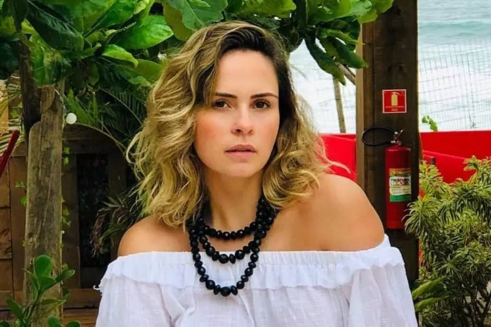
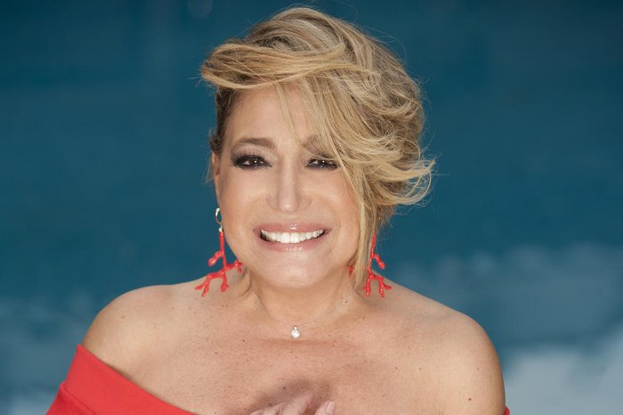

Fofoca do Dia

Ana Paula
Ana Paula Renault desabafou em suas redes sociais
e revelou que vem sendo perseguida na internet, e considera
o que está passando como um dos momentos mais difíceis em sua vida.
Ao que tudo indica, os ataques à jornalista estão acontecendo
devido às suas opiniões políticas e, até onde se sabe, não estão partindo de haters.
Após ser demitida do SBT, onde trabalhava no programa
"Fofocalizando", Ana Paula viu sua vida mudar completamente.
A ex-BBB contou que entre os diversos ataques, estão ameaças constantes de morte e montagens
em que seu rosto aparece com um tiro na testa. Ela declarou que a extrema-direita
está tentando acabar com a imagem de pessoas que são contra o governo..
Kim Kardashin
Kim Kardashian, que ainda está curtindo a Itália
com grande parte da sua família,usou o Instagram,
na noite desta sexta-feira (27), enquanto se produzia
para mais uma saída, com ajuda de seu maquiador,
Mario Dedivanovic. Recentemente a empresária mudou
o visual para um look platinado, Kim apareceu
fazendo vídeos nos story do instagram nos quais
aparece bem à vontade, usando uma blusinha branca
sem alça e um sutiã preto decotadíssimo. Ainda nesta
sexta-feira (27), Kim postou fotos curtindo
a Itália com a sua filha mais velha, North West, de 8 anos,
na legenda da foto ela referenciou o shipp do casal Travis
e Kourtney "Kravis Forever". Kim e North também se encontraram
com os fundadores da Dolce & Gabbana, Domenico Dolce e Stefano Gabbana.

Susana Vieira sobre descobrir câncer: eu vou morrer quando?
“Nunca tive medo, mas eu não sou medrosa mesmo. Só perguntei assim:
‘Eu vou morrer quando? Eu vou ficar careca? Foram as duas perguntas que fiz”, disse.
Em seguida ela falou que não pretende se aposentar tão cedo:
“Nunca quis deixar de trabalhar, nunca quis me aposentar.
O brasileiro tem uma mania de querer se aposentar com 60 anos. Eu, hoje, estou com 79 anos,
então o que teria feito?
Ficado em casa? Adoro fazer televisão, sinceramente”.